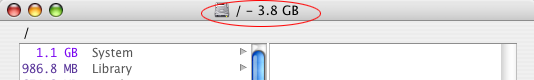

File Sizes
While you are browsing through your files in OmniDiskSweeper, you can see the selected drive size and the individual file or folder sizes.
Drive Size The selected drive and the amount of data found on it are displayed in the title bar of the browser window. As you delete files, this number automatically updates. Please remember that OmniDiskSweeper can only display files and folders that are accessible by the current user. If you do not have access to some restricted folders, neither will OmniDiskSweeper. As a result, the Finder may say that you have 17 GB used but OmniDiskSweeper may only show you 10 GB of the data.

Individual File and Folder Sizes Each file or folder listed in the browser window has its size displayed next to it. The size is also displayed at the bottom of the browser window when you select a file or folder.